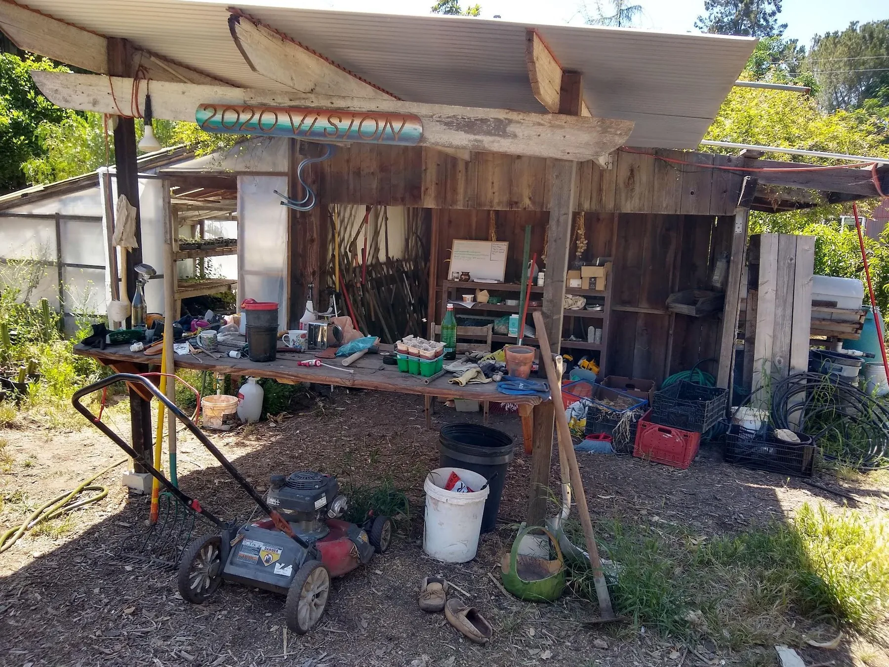

A slow walk through Full Circle as it appeared in 2022: from the west orchard and main house to the gardens, workshops, small dwellings, Persimmon Hill and the wild edge of Lion Creek.
Arriving at Full Circle from the tree-lined road
Orientation
One property, many overlapping systems
Full Circle occupied 5.5 acres between Ojai–Santa Paula Road and Lion Creek. The site rose roughly twenty-five feet toward Persimmon Hill in the north, while its southern edge dropped into a dense creek corridor. Homes, paths, orchards, gardens, tools, water and community spaces accumulated over decades rather than arriving as a single master-planned landscape.
5.5 acresdesign site
~20residents in 2022
25 ftapproximate rise to the hill
10 stopsin this archival walk
38 yearsof community history recorded
The hand-drawn route
Walk the base map
The original base map is not a surveyor’s plan. It is a working memory of the property: roads and paths in black, living spaces in brown, community spaces in pink, water in blue, chickens in yellow, garden areas in green and the orchard ground in earth tones.
The tour begins near the western approach, loops through the community core, climbs toward the hill and water systems, then finishes at the southern wild edge.
Arriving from the road, the west side reads first as orchard. Mature orange, lemon, persimmon and pomegranate trees soften the boundary and place food production at the entrance to the property. The driveway threads between planted ground, motorhomes and small structures before turning toward the community core.
This approach reveals a central character of Full Circle: productive plants, homes and circulation are interwoven rather than separated into tidy districts.
The main house was both residence and commons. Four people lived there in 2022, while cooking, meetings and informal community life brought many more through its rooms and shaded outdoor edges. Its importance came less from size than from frequency: it was the place people returned to every day.
Seen as a permaculture zone, the house anchors the highest-attention area. The garden, bathhouse, workshop and gathering places all sit within a short walk of this social center.
The fenced garden occupied roughly an acre toward the eastern center of the property. Raised beds, paths and perennial edges created a place that demanded daily observation. The fence held back rabbits and other animals; the proximity to homes and community spaces kept watering, harvest and small repairs visible.
Beside the garden, chickens converted food scraps into eggs, manure and disturbed soil. A shaded garden shed held tools and potted plants, while a nearby greenhouse was acknowledged as too hot during summer — an example of the site teaching through use.
The garden as a place of shared workBuilding shelter for the laying flock

The practical garden work edge
Stops 05–06
Shared infrastructure
Where work becomes community capacity
The community room and stage grew from a dirt-floor space into a frequently used gathering place beside the workshop. Next door, shared tools made repair and construction possible without every resident owning a separate set of equipment.
The bathhouse and laundry concentrated another kind of shared infrastructure. Its shower water flowed toward an arundo patch in 2022, while the workbook proposed a more deliberate branched-drain greywater system. These ordinary buildings reveal how community is supported by the spaces that hold maintenance, sanitation and repair.
Building together with shared toolsLaundry, bathing and greywater opportunity
Stop 07
A village of small dwellings
Cabins, trailers, domes and improvised homes
Full Circle was never a single-house property. Cabins, trailers, motorhomes, a converted cargo-trailer tiny home, tents, a geodesic dome and an earthbag shelter formed a dispersed village beneath the trees.
Each dwelling had a different relationship to shade, paths and shared facilities. The small earthdome carried an additional lesson: its thick earthen shell survived the Thomas Fire, demonstrating resilience through material and form.
A studio cabin tucked into the shadeThe fire-resilient earthdome
Stop 08
The high point
Persimmon Hill and stored water
The property rises toward Persimmon Hill along the north side. Black locust, eucalyptus and approximately twenty persimmon trees occupied this higher ground. From the top, the garden and southern landscape become legible as one system.
Two large galvanized water tanks stood on the hill. In 2022 they were underused and difficult to fill without waste, but their elevation suggested gravity-fed possibilities explored later in the design work.
A solar-powered well supplied the property’s primary water, with municipal water available as backup. Nearby and throughout the orchards, bees connected flowering cycles to fruit production. Worm bins turned organic material into castings and compost tea, while larger compost piles held both fertility and unfinished potential.
These systems are easy to pass without noticing, yet they form the hidden metabolism of the site: lift water, move pollen, digest waste, return nutrients.
The solar-powered well houseLearning together from the hiveRed wigglers and compost tea
Stop 10
Zone 5
Lion Creek and the place left mostly alone
At the southern boundary the land drops roughly twenty feet into Lion Creek. Dense brush and steep ground made much of this corridor difficult to enter. Bobcats, raccoons, possums and other wildlife moved through an area where human activity was intentionally light.
The creek edge is not empty space. It is habitat, drainage, fire history and a reminder that observation can be a form of stewardship. The walking tour ends here because the path itself becomes uncertain.